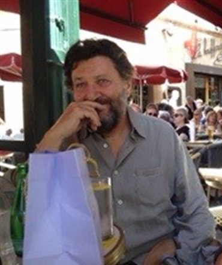

100 exemplaires numérotés
Les Aquarellistes Anonymes
Patrice Caumon
25 €TTC, TVA 5,5 % incluse
Acheter le livre
Paiement par carte bancaire, sécurisé par Stripe. Frais de port : 8 € (Colissimo, France métropolitaine), ajoutés à la commande.
Pourquoi la planche de l'aquarelliste est-elle penchée ? Pour que l'eau coule sur le papier « sans rigoler ». Dans Les Aquarellistes Anonymes, Patrice Caumon pose sur la peinture à l'eau un regard tendre et malicieux, en une suite de courts textes qui tiennent à la fois de la maxime, de la confidence d'atelier et du jeu de mots.
Entre ces pages, ses propres aquarelles répondent aux mots. Un livre à feuilleter, à relire, à offrir à tous ceux qui ont un jour trempé un pinceau dans l'eau.
- Auteur
- Patrice Caumon
- Éditeur
- Les Éditions du Guetteur
- Tirage
- 100 exemplaires numérotés
- Format
- 23 × 17 cm, 116 pages
- Prix
- 25 € TTC
- Frais de port
- 8 € (Colissimo, France métropolitaine uniquement)
- ISBN
- 979-10-984927-0-9
